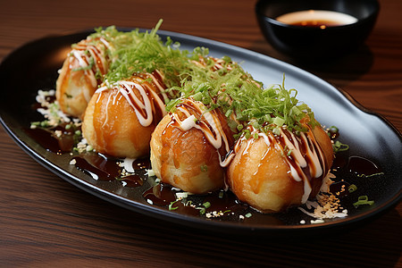
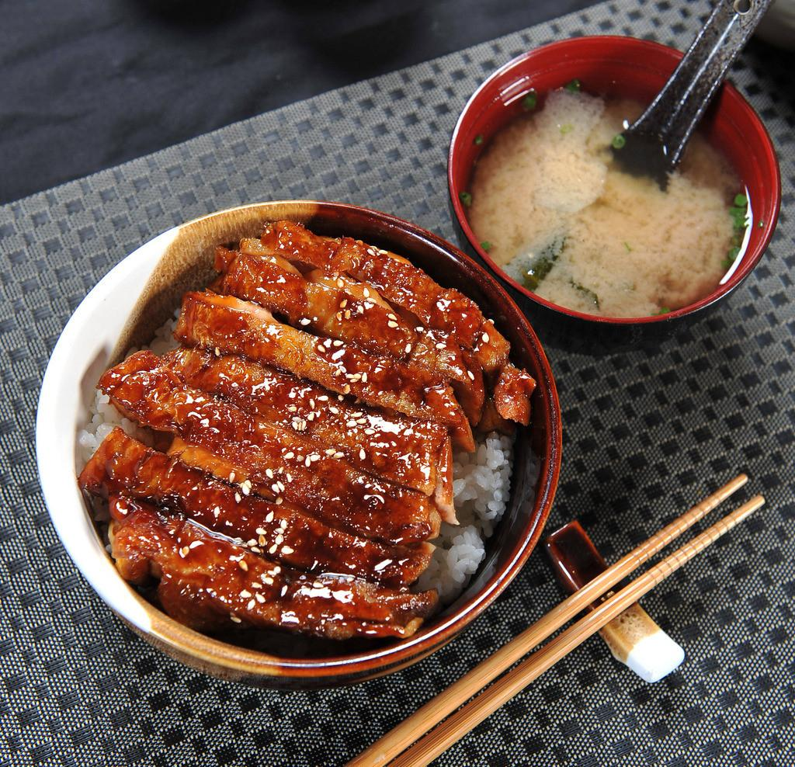
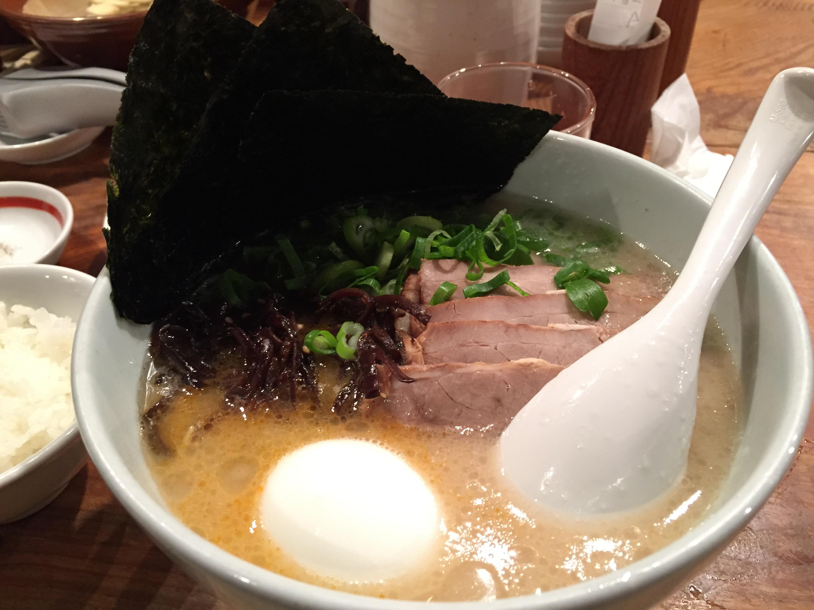
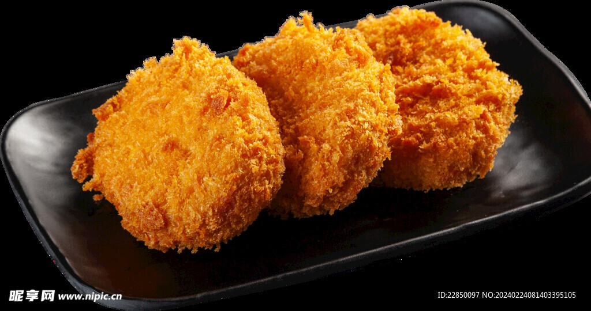

大阪·京都·奈良地道美味

大阪代表性美食，外酥里嫩，Q弹章鱼粒，街头必吃小吃

日式经典料理，蒲烧鳗鱼搭配米饭，酱香浓郁，营养美味

酱油汤底为主，面条偏细，搭配叉烧、笋干、溏心蛋，清爽不腻

牛肉制成的可乐饼，外皮酥脆，内馅柔软多汁，一口爆浆
关西地区（大阪、京都、神户、奈良等）被誉为日本的美食天堂，以丰富的街头小吃、精致的传统料理和优质食材闻名。这里的饮食文化融合了历史传承与创新精神，形成了独特的"关西风味"。
大阪素有"食い倒れ"(吃到破产)的称号，街头小吃文化极为发达
关西版 savory pancake，面糊+大量卷心菜+肉/海鲜，铁板煎制，口感蓬松
推荐吃法：挤上特制酱汁+美乃滋，撒柴鱼片(会"跳舞")+海苔粉，可加炒面做"摩登烧"
大阪原创小吃，小麦面糊包裹章鱼块+天妇罗碎+腌姜+葱花，圆形铁板烤制
推荐吃法：淋上甜咸酱汁+美乃滋，撒柴鱼片+海苔粉，一口一个烫嘴才地道
猪肉/鸡肉/海鲜/蔬菜裹薄面糊炸制，外酥里嫩
推荐吃法：蘸特制酱汁(只能蘸一次！)，配发酵卷心菜解腻
关西乌冬偏粗，口感Q弹，汤头清澈(出汁+酱油)
推荐吃法：冷乌冬配葱花+芥末+酱油，热乌冬配天妇罗，推荐"釜扬げ乌冬"
深夜食堂必备，鸡肉串/内脏串炭火烤制，刷甜酱油
推荐吃法：芝士豆腐串必点，晚6点前到店免排队
道顿堀、心斋桥、黑门市场、通天阁周边（うさぎや老铺大阪烧、赤鬼章鱼烧）
京都料理讲究季节感、食材原味和视觉美感，体现"和敬清寂"的茶道精神
日本最高级料理之一，一汁三菜基础上发展，注重季节食材与器皿搭配
推荐体验：选择"京怀石"，品尝京野菜（九条葱、加茂茄子、万愿寺辣椒、圣护院萝卜）的独特风味
京都代表性素食，软水制作的豆腐，清淡细腻，突出豆香
推荐体验：清水寺周边老店，"湯豆腐鍋"配柚子醋，冬季暖身佳品
汤底清澈（鸡骨+小鱼干），面条偏细，叉烧肥而不腻，配京野菜
推荐体验：麺屋極鶏的"鶏だく"拉面，汤浓味鲜，"レンゲが立つ"的浓稠度
京都传统腌菜，种类繁多（千切大根、茄子、黄瓜等），酸甜咸平衡
推荐体验：作为配菜搭配米饭，或在茶会中食用，体现"一期一会"的美学
京都抹茶闻名世界，浓郁微苦，制成各种甜点
推荐体验：宇治抹茶冰淇淋、抹茶蕨饼、抹茶芭菲，推荐"中村藤吉"本店
奈良作为日本古都，保留了许多传统乡土料理，以柿叶寿司和奈良渍最为著名
奈良代表性料理，寿司饭+鱼肉（多为鲷鱼/青花鱼）用柿叶包裹，腌制数天
推荐体验：柿叶香气渗入米饭，微酸开胃，作为便当或伴手礼，推荐"柿叶寿司 万叶"
奈良传统腌菜，以"千切大根"(萝卜丝)为主，用米糠+盐+曲发酵，酸甜爽脆
推荐体验：作为早餐配菜，或搭配奈良茶，体现古都的朴素饮食文化
奈良乡土火锅，用鸡肉+蔬菜+豆腐+蒟蒻煮制，汤底清淡（出汁+酱油）
推荐体验：冬季在奈良公园附近老店品尝，暖身又美味
奈良麻薯口感Q弹，有甜味和咸味两种，配黄豆粉或酱油
推荐体验：作为茶点，在奈良的神社寺庙周边小店购买，新鲜现做
奈良公园周边、奈良町传统街区、东大寺附近
关西美食不仅是味觉的享受，更是文化的体验。从大阪的热闹街头到京都的幽静茶屋，奈良的质朴乡土料理，每一口都蕴含着关西地区的历史与风情。